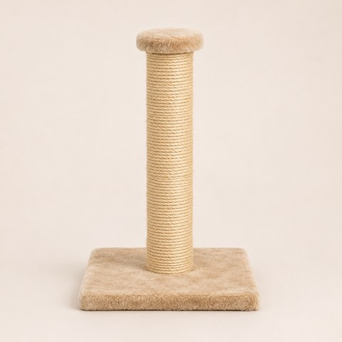
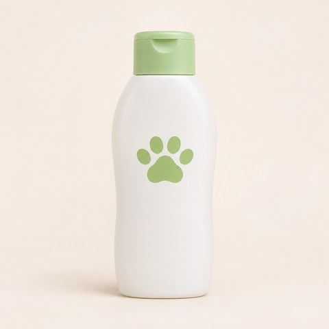
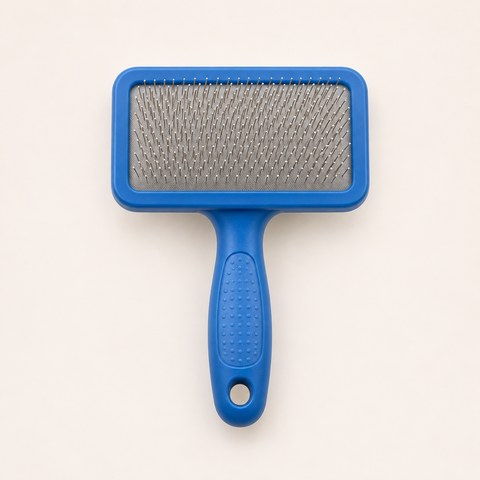

Ração seca para cães adultos

Pacote de 1 kg com grãos secos para cães adultos.
Preço: R$ 29,90
Nosso catálogo
Alimentação, acessórios e cuidados em uma seleção para a rotina.
Pacote de 1 kg com grãos secos para cães adultos.
Preço: R$ 29,90

Lata de 85 g com pedaços de frango ao molho.
Preço: R$ 6,50

Guia ajustável para passeios, com fecho metálico.
Preço: R$ 34,90

Poste revestido de sisal com base para apoiar no chão.
Preço: R$ 69,90

Frasco de 300 mL de shampoo para a rotina de banho.
Preço: R$ 24,90

Escova com cabo curto para retirar pelos soltos.
Preço: R$ 27,90